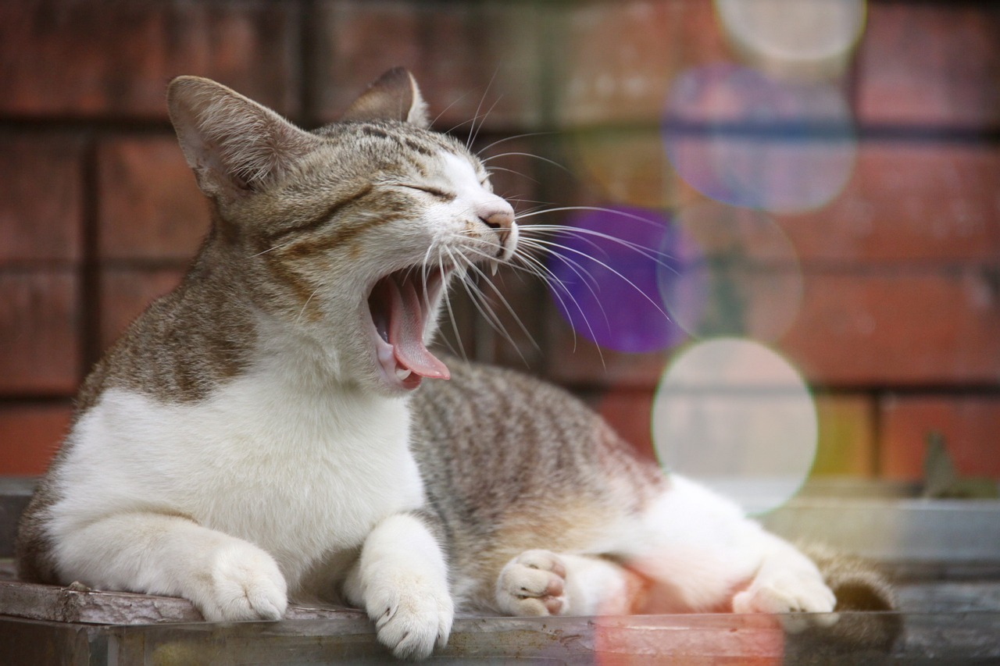

關於我們
愛心領養
飼主送養
最新消息
聯絡我們
善心贊助
登入/註冊
首頁
>
最新消息
最新消息
新聞發布

【新竹市】萌翻天！竹市毛寶貝同樂會今登場 現場免費健檢飼主直呼好安心
【臺南市】購買動物用藥品「停查看」拒絕來路不明黑心禁藥
【產發處動物保護防疫所】首座寵物公園落腳暖暖運動公園 預計明年六月前啟用
【雲林縣】打造全方位友善城市 虎尾汪星人運動公園啟用
【動物保護處動物檢診課】觀音區台66線私人狗園涉虐狗致死 動保處將追查開罰
【桃園市】桃園市111年特定寵物業評鑑結果
【新北市】寵物食品標示不明 分裝販售小心觸法
【雲林縣】保護雲林毛小孩 防疫所與嘉義大學合作推動犬貓防疫及絕育工作
See more
活動專區
敬請期待！
協尋專區
新北市政府動物保護防疫處
臺北市動物保護處
新竹縣動物保護防疫所
桃園市政府動物保護處
臺中市動物保護防疫處
臺南市動物防疫保護處
基隆市動物保護防疫所
高雄市動物保護處
新竹市動物保護及防疫所
苗栗縣動物保護防疫所
彰化縣動物防疫所
雲林縣動植物防疫所
宜蘭縣動植物防疫所
See more